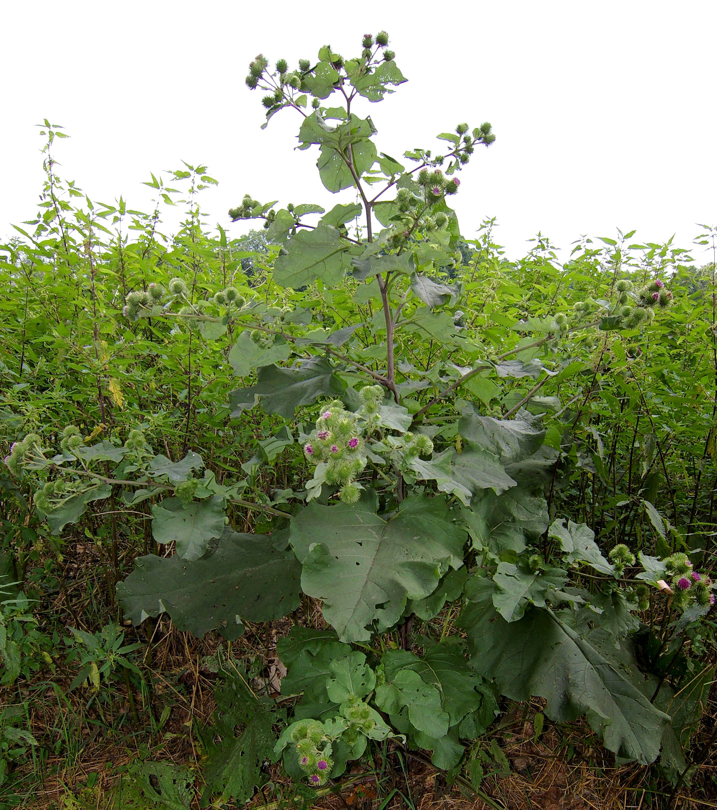

Arctium lappa
| common name | burdock | |
| en español | bardana | |
| name in TCM | niú bàng (牛蒡) | |
| plant family | Asteraceae (aster/daisy) | |
| parts used | fresh and dried root, seeds, and leaves |
 from Wikimedia Commons by Christian Fischer, CC BY-SA 3.0
observations/description
dried root
- small pieces ranging from light beige to dark brown
- very light, slightly sweet aroma
"Arctium lappa", Wikipedia
- large plant, reaching up to 3 meters
- large, alternating, wavy-edged cordiform (heart-shaped) leaves that have a long petiole and are pubescent (covered in fine hairs) on the underside
- flowers are purple and grouped in globular capitula (composite flower), united in clusters
- fruits are achenes
- fleshy taproot can grow up to 1 meter deep
distribution/conservation status
"Arctium lappa", Wikipedia
- native to the temperate regions from Scandinavia to the Mediterranean, from the British Isles through Russia, and from the Middle East to India, China, Taiwan, and Japan
- naturalized almost everywhere and is usually found in disturbed areas, especially in soil rich in humus and nitrogen, preferring full sunlight
- considered an invasive weed of high-nitrogen soils in North America, Australia, and other regions
primary actions
The Yoga of Herbs, p. 105-6
- alterative, diaphoretic, diuretic, antipyretic, anti-inflammatory
Spiritual Herbalism, p. 82-3
- alterative, diaphoretic, diuretic, antitumor, antiphlogistic, bitter, laxative, antibacterial, antiarthritic, demulcent, vulnerary, nutritive tonic, anti-inflammatory
The Modern Herbal Dispensatory, p. 138
- alterative, anticancer, bitter, cholagogue, diuretic, hepatic, lymphatic, mast cell stabilizer
The New Age Herbalist, p. 41
- diaphoretic (mild), diuretic (mild), alterative, laxative (mild), anti-microbial, anti-inflammatory, bitter, anticancer, antihyperglycemic
system affinities
digestive, lymphatic, integumentary, excretory
primary uses
The Yoga of Herbs, p. 105-6
- strong action in cleansing the blood and lymphatics
- clears congestion, reduces inflammation, dispels toxins: either through the skin or diuresis
- tonic and rejuvenative for pitta, especially with bhringaraj
- can be used regularly for regulating pitta
- helpful for pitta emotions like anger, angression, ambition
- can be used in most āma conditions
- burdock root works well with yellow dock; burdock seeds with coriander seeds
- used to treat inflammatory skin conditions and rashes
- febrifuge: good for cold with fever and sore throat
- blood/lymph purifier: indicated for toxins in the blood, lymphatic clogging, nephritis, edema, kidney inflammation, and hypertension
- seeds are a strong diuretic and also help relieve cough
Spiritual Herbalism, p. 82-3
- treats skin conditions: skin eruptions, acne, eczema, psoriasis, boils
- anti-inflammatory action aids in conditions like gout and arthritis
- blood cleanser/tonic
- aids with kidney problems, toxic buildup in the blood/chemical exposure, alcohol/drug/smoking use
- supports heart conditions and edema
The Modern Herbal Dispensatory, p. 138
- used to treat skin conditions
- helps to clear acne and other skin irritations
- leaves may be used as a poultice on infected sores
- strong decoction of the root in a bath for itching
- stabilizes mast cells, which reduces allergic reactions
- stimulates bile production and strengthens the liver
The New Age Herbalist, p. 41
- purifies and cleanses the tissues and blood
- prescribed for skin diseases like eczema and psoriasis
- has antimicrobial action; used for treating skin eruptions like acne and boils
- attributed to polyacetylenes
- antimicrobial + diuretic = useful for treaing cystisis (a UTI)
- seeds are used in TCM to treat measles, sore throats, tonsilitis, colds, and flu
- diuretic action promotes the elimination of uric acid, which is helpful for treating gout and rheumatism
- bitter taste is a digestive tonic; leaves said to stimulate production of bile
- seeds may lower blood sugar; has been used for supporting diabetes
- leaves make a good poultice for bruises and skin problems
- leaves or root can be made into a scalp lotion for hair loss
- entire plant has a reputation for treating cancer
energetics
The Yoga of Herbs, p. 105-6
- reduces pitta, kapha; increases vāta (in excess)
- bitter/pungent/astringent/sweet (root only) taste - pungent post-digestive effect
- cooling
Spiritual Herbalism, p. 82-3
- bitter, sweet
The Modern Herbal Dispensatory, p. 138
- cooling, moistening, nourishing
pharmacology
Spiritual Herbalism, p. 82-3
- amino acids, inulin, carbohydrates, minerals, essential oils
The New Age Herbalist, p. 41
- roots
- inulin (up to 50%), polyacetylenes, tannins, polyphenolic acids
- volatile acids
- acetic, proprionic, butyric, isovaleric acids
- non-hydroxyl acids
- lauric, myristic, stearic, palmitic acids
- seeds
- fixed oils (15-30%), arctiin (bitter glycodside), chlorogenic acid
- leaves
- arctiol, fukinone, taraxasterol
contraindications/pharmaceutical interactions/warnings
The Yoga of Herbs, p. 105-6
- contraindicated for anemia, chronic chills, high vāta
Spiritual Herbalism, p. 82-3
- lowers blood pressure
- for people taking insulin for diabetes, burdock may lower blood sugar
The Modern Herbal Dispensatory, p. 138
- no known contraindications
preparations
The Modern Herbal Dispensatory, p. 138
- standard decoction
- dried root, 30 g: 1 L, covered
- tincture
- fresh root or seeds, 1:2, 95% alcohol
- dried root or seeds, 1:5, 50% alcohol
- roots for chronic issues, seeds for acute issues
- glycerite
- dried root, 1:5
- powder
Herbal Materia Medica, p. 7
- cold infusion
- dried root, 1:32
- tincture
- fresh root, 1:2
- dried root or seed, 1:5, 60% alcohol
- fluid extract
- root, 1:1, 60% alcohol
The Herbal Medicine-Maker's Handbook, p. 110, 115, 155, 192
- cold infusion
- dried root, 3-5 g: 8 oz
- decoction
- dried seeds, 2-5 g: 8 oz
- tincture
- fresh root, 1:2, 100% alcohol
- dried root, 1:5, 40-60% alcohol
- seed, 1:5, 60-70% alcohol
- glycerite
- fresh root, 1:2, 80% glycerin
- dried root, 1:5, 60% glycerin
- seed, 1:5, 60% glycerin
The Yoga of Herbs, p. 78-9, 105-6
- hot infusion
- fresh root, 1:4 (strong)
- fresh root, 1:8 (moderate)
- cold infusion
- fresh root, 1:4 (strong)
- fresh root, 1:8 (moderate)
- decoction
- dried root, 1:16, reduce to 1/4 original amount
- powder
- paste
dosage
The Modern Herbal Dispensatory, p. 138
- standard decoction: 0.5-1 cup, 2-3/day
- tincture: 1-5 mL, 3/day
- glycerite: 2-10 mL, 3/day
- powder: 1000-3000 mg, 1-2/day
Herbal Materia Medica, p. 7
- cold infusion: 2-4 oz, 3/day
- tincture
- root: 30-90 drops, 3/day
- seed: 10-25 drops, 3/day
- fluid extract: 15-30 drops, 3/day
The Herbal Medicine-Maker's Handbook, p. 110, 115, 155, 187
- cold infusion: 8 oz, 3/day
- decocion: 8 oz, 3/day
- tincture
- root: 2-4 mL, 3/day
- seed: 1-2 mL, 3/day
- glycerite: up to 5 mL, 2-3/day
The Yoga of Herbs, p. 92, 105-6
- hot infusion: 2 oz, 3/day
- cold infusion: 2 oz, 3/day
- decoction: 2 oz, 3/day
- powder: 250-1000 mg, 3/day
extra information
Spiritual Herbalism, p. 82-3
- was pounded into wine to treat leprosy in the fourteenth century
personal experiences/simples
decoction (0.25 oz: 16 oz, 30 minutes -> 8 oz), dried root
- aroma became more pronounced as it boiled, slightly woody/nutty; catching a whiff of some high/lifting notes, somewhat reminiscent of chrysanthemum, this becoming more pronounced as well
- flavor is reminiscent of a slightly more acrid/sour/bitter chrystanthemum tea, with fuller body; very pleasant, nostalgic; sweet taste
- acrid/sour taste only upfront/on first few sips - perhaps like dandelion root, as it cools it becomes more pleasant, less harsh
- feels very nourishing; i feel held; this is an ally
- tongue feels coated
- very grounding; time is slowing; space is expanding
- there is a relaxing/opening happening in my upper back and chest
witchcraft
Spiritual Herbalism, p. 82-3
- taproot plant, digging deep into the soil and touching the ancestor realm
- upon first usign burdock, one may experience a 'healing crisis' in which the condition appears to worsen before getting better; this is true of its magical uses as well
- 'the wound has to reveal itself to heal'
- holds the mirror of truth, helping to see its beauty
- reveals the truth about deep-rooted subconscious beliefs, habits, emotions, trauma
- brings old wounds to the surface, that we may heal
- helps with breaking and releasing old habits
- helps us see the truth behind the pattern
- grounds and supports throughout the process of encountering truth and rooting us in truth
- planetary influences: venus, water
The Witch's Encyclopedia of Magical Plants, 56
- burrs used in a form of divination to tell if someone had a sweetheart
- leaves used in love potions to stimulate lust
- pixies were said to use burrs in pranks to tangle the manes of colts
- leaves used in exorcism rites in Albania for evil forest spirits
- elements: water
- astrological influence: libra, sagittarius, taurus, venus
recipes
sources
"Arctium lappa" on Wikipedia. Retrieved 6 May 2025.
Easely, Thomas and Steven Horne. The Modern Herbal Dispensatory (2016)
Frawley, David and Vasant Lad. The Yoga of Herbs: An Ayurvedic Guide to Herbal Medicine (1986)
Goldberg Blackthorn, Samantha. Ace of Cups Herbal Medicine and Botanical Magic Herbal School (2024)
Green, James. The Herbal Medicine-Maker's Handbook: A Home Manual (2000)
Kynes, Sandra. The Witch's Encyclopedia of Magical Plants (2024)
Mabey, Richard et al. The New Age Herbalist (1988)
Moore, Michael. Herbal Materia Medica, Fifth Edition (1995)
Rose, Karen M. The Art & Practice of Spiritual Herbalism (2022)